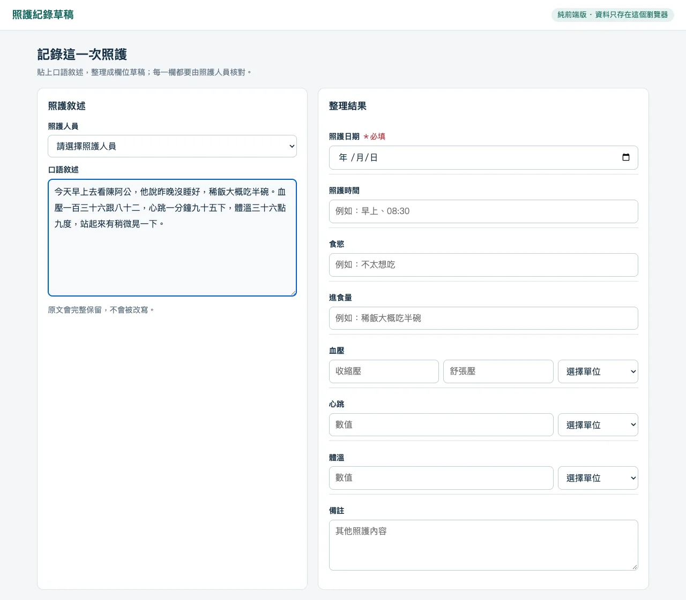
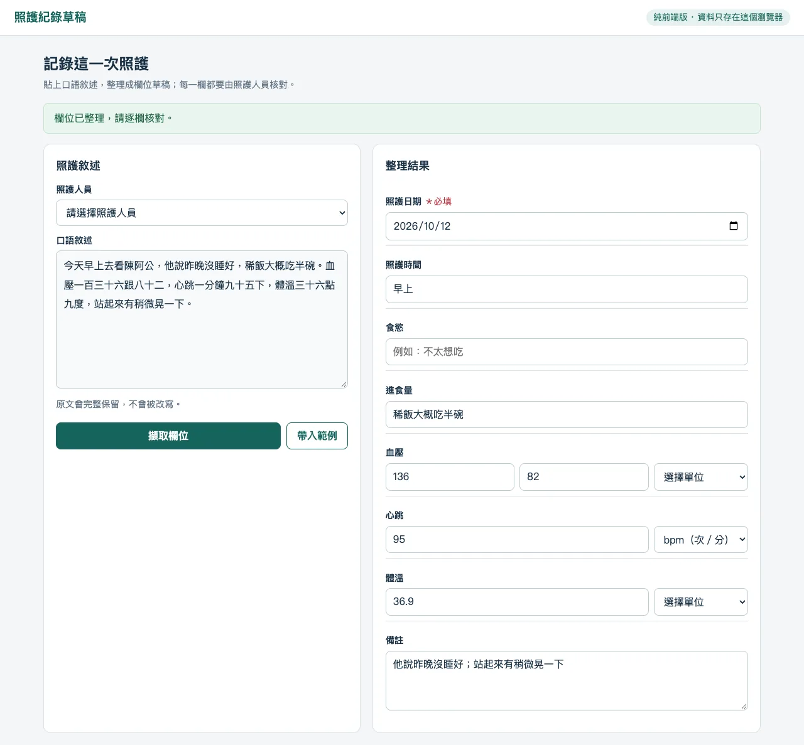
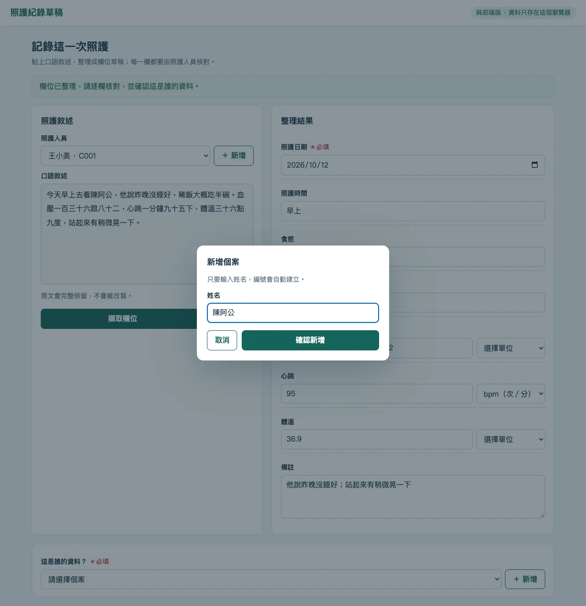
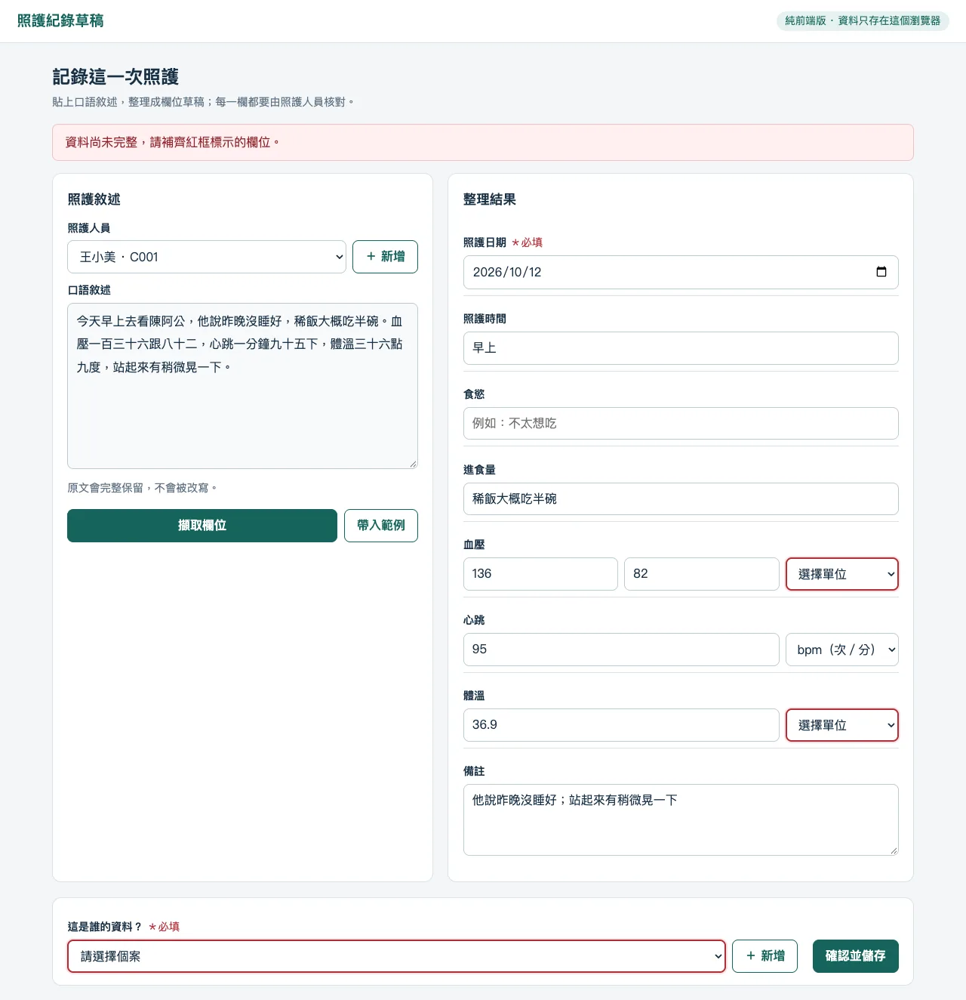
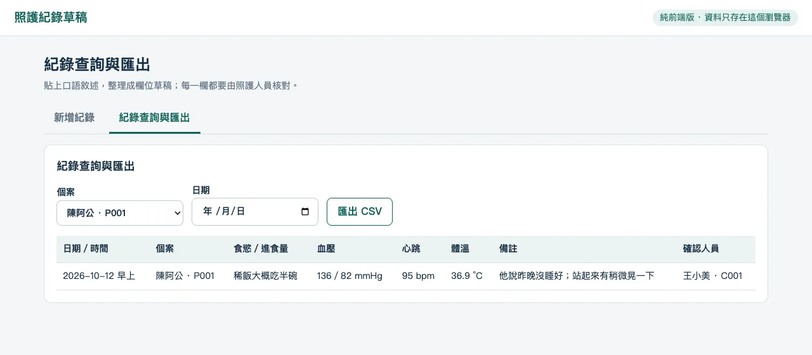
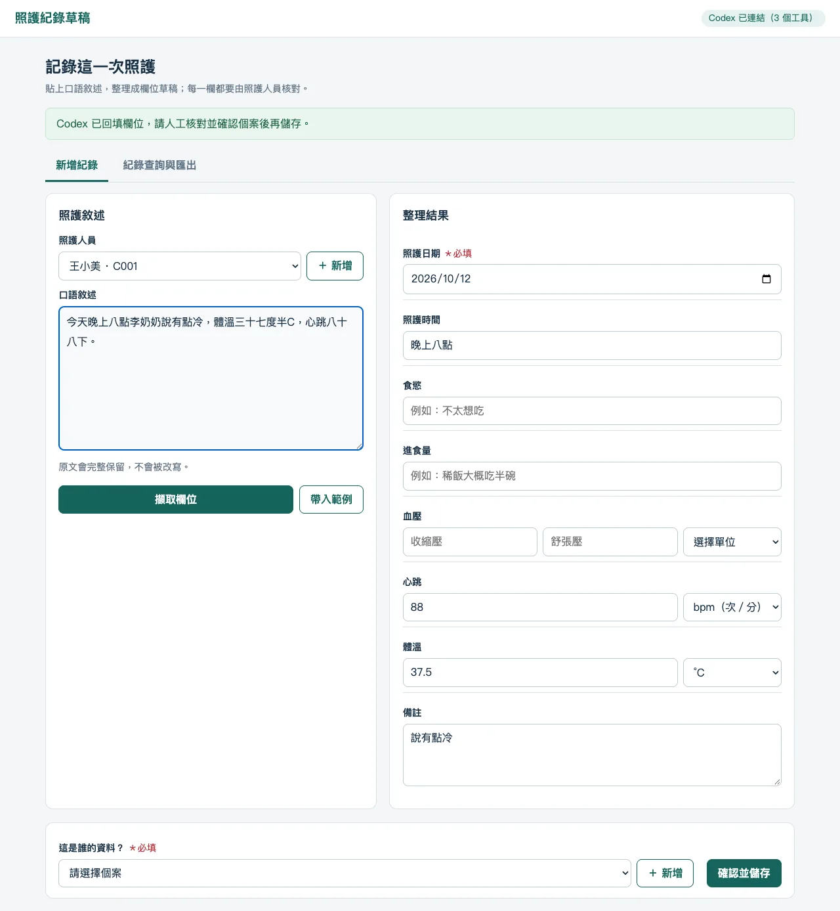
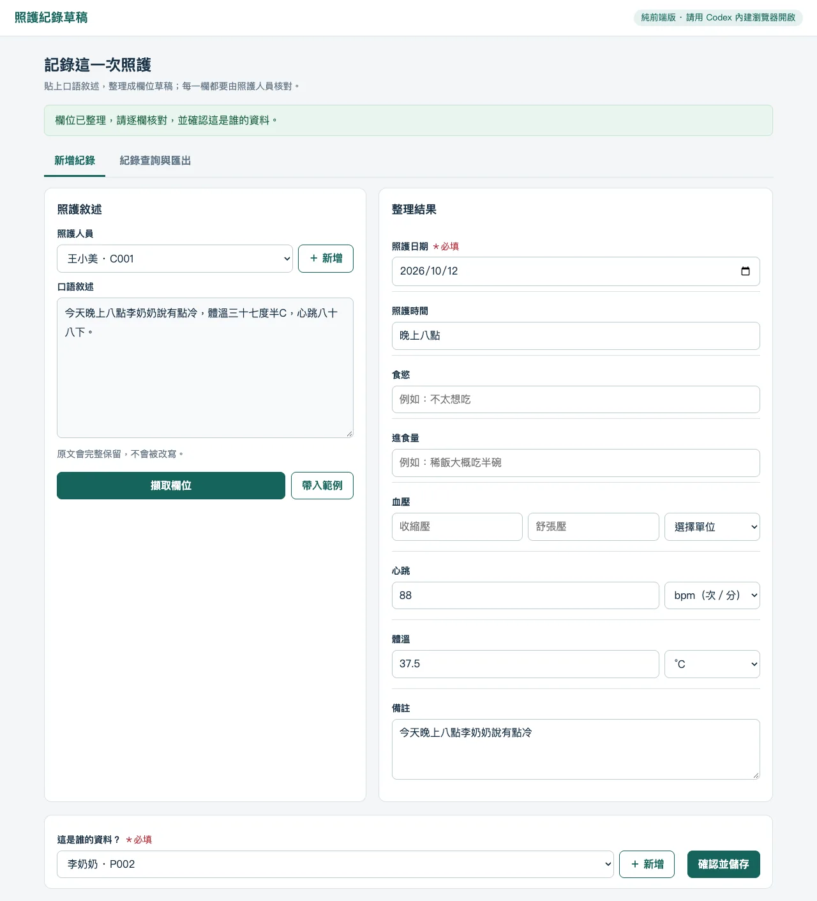
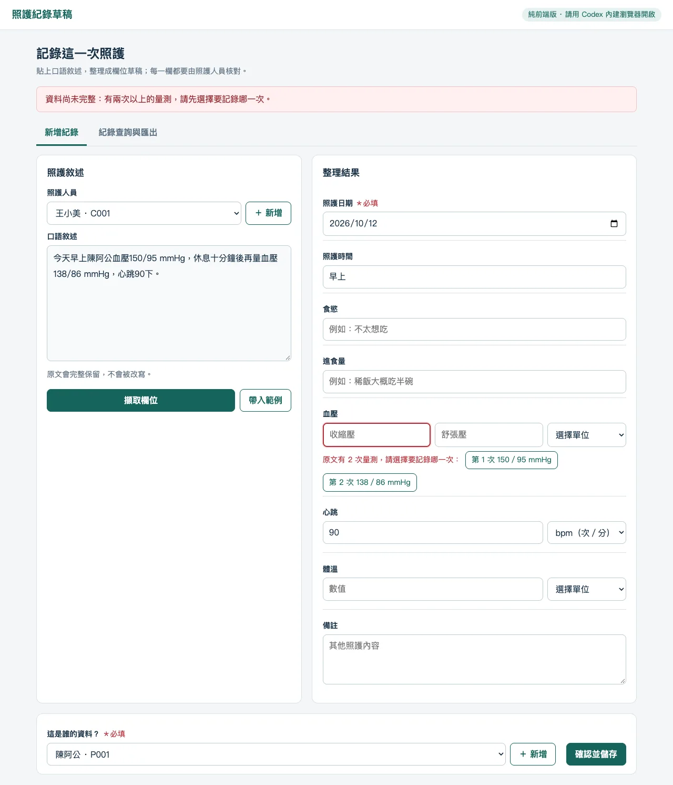

第二天 · 模組 07
模組 07｜AI 專題：照護紀錄草稿填寫工具
照護人員常用口語記下照護過程，例如「血壓一百三十六跟八十二，心跳一分鐘九十五下」。這個模組你會先操作一個做好的照護紀錄工具，把一段虛構的口語敘述整理成表單草稿；再用測試敘述檢查它哪裡整理錯、哪裡會提醒缺漏；最後請 AI Agent 一層一層做出自己的版本。不需要會寫程式：你負責訂清楚欄位規則、準備測試敘述，並親自核對每一個整理出來的數值。
模組 06 的排班工具，練習了「先寫規則、一次一層、親自測試」。這一模組用同樣的方法處理文字資料，並多一個重點：工具只負責整理草稿，個案歸屬與正式儲存一定由人確認。最後一節帶你整理專題展示，回顧兩天做出的成果。
01學習目標與階段成果
你會得到三樣東西：一個照護紀錄草稿工具，可以貼上口語敘述、整理成欄位、用紅框標示缺漏，再由你確認個案後保存與匯出；一份測試紀錄，寫下每段測試敘述應該整理成什麼、實際整理成什麼；以及一份三分鐘專題展示的大綱。
- ① 訂欄位規則要整理哪些欄位、什麼是必填
- ② 操作範例把一段口述整理成草稿
- ③ 測試範例用六段敘述找出問題
- ④ 做自己的版本請 AI Agent 一次加一層功能
- ⑤ 展示與回顧說清楚範圍、資料與檢核
- 說出這個紀錄工具第一版整理哪些欄位、不做什麼。
- 分清「原文有說」「原文沒說」與「原文說得不清楚」三種情況，知道後兩種要留空。
- 操作範例工具完成新增人員、擷取欄位、確認個案、保存、查詢與匯出。
- 用六段測試敘述檢查工具，記下預期與實際結果。
- 請 AI Agent 逐層做出自己的版本，並用同一組敘述驗收。
- 用三分鐘說明自己的專題：範圍、安全資料、專業檢核與成果。
02假設敘述與欄位規則
真實的照護紀錄有機構格式、專業術語、法規與交班流程。第一版先縮小範圍，只做一張可以核對的照護紀錄草稿：把一段口語敘述，整理成固定幾個欄位。
從一段口語敘述，整理出日期、時間、食慾、進食量、血壓、心跳、體溫與備註；照護人員與個案從名單中選擇。
重要原則：只填原文有依據的資料；原文沒說或說得不清楚，就留空並提醒人工確認，不能自行猜測。
| 項目 | 第一版要做 | 第一版不做 |
|---|---|---|
| 輸入 | 貼上一段口語照護敘述，原文完整保留 | 語音輸入、拍照辨識 |
| 欄位 | 日期、時間、食慾、進食量、血壓、心跳、體溫、備註 | 護理診斷、評估量表、用藥紀錄 |
| 人員 | 照護人員與個案用「人名 · 編號」下拉選單，新增時自動編號（C001、P001） | 登入、權限、真實病歷號 |
| 檢查 | 日期、個案必填；生命徵象有數值就要有單位；缺漏以紅框提示 | 判斷數值是否異常、給照護建議 |
| 系統 | 純前端、資料只存在目前瀏覽器、可查詢與匯出 CSV | 資料庫、雲端同步、上傳到機構系統 |
用工具完成一筆紀錄，會依序經過四個步驟：
- ① 貼上敘述先選照護人員，再貼上原文
- ② 整理欄位擷取後逐欄核對
- ③ 確認個案由人從名單選擇資料歸屬
- ④ 儲存必填欄位齊全才能保存
一段假設的口語敘述
下面是本模組反覆使用的範例敘述。人名與內容都是虛構的，請照原樣使用，不要換成真實個案。
今天早上去看陳阿公，他說昨晚沒睡好，稀飯大概吃半碗。血壓一百三十六跟八十二，心跳一分鐘九十五下，體溫三十六點九度，站起來有稍微晃一下。保留照護人員原本的說法，不必先改寫成制式句子。整理的工作交給工具，核對的工作留給人。
每個欄位的規則
| 欄位 | 規則 | 範例 |
|---|---|---|
| 照護日期 | 必填。「今天」「昨天」換算成日期；沒有提到就留空 | 2026-10-17 |
| 照護時間 | 選填。可寫時段或時刻 | 早上、08:30 |
| 食慾 | 選填。只抄原文對食慾的描述 | 不太想吃、胃口不錯 |
| 進食量 | 選填。保留原文的份量說法 | 稀飯大概吃半碗 |
| 血壓 | 收縮壓、舒張壓兩個數值加一個單位 | 136／82，單位 mmHg |
| 心跳 | 數值加單位；「下」「次」都代表次／分 | 95，單位 bpm |
| 體溫 | 數值加單位；只說「度」時不知道是 °C 還是 °F | 36.9，單位 °C |
| 備註 | 其他照護內容，原文另外完整保留 | 站起來有稍微晃一下 |
| 照護人員、個案 | 從「人名 · 編號」下拉選單選擇；個案必填，不能只依原文稱呼自動歸檔 | 王小美 · C001、陳阿公 · P001 |
三種情況要分開處理
照原文填
「心跳一分鐘九十五下」→ 心跳 95、單位 bpm。
留空
敘述沒有提到體重，就不填；不能用上次的紀錄補。
留空並提醒
「血壓一百三十六跟八十二」沒說單位，數值照填，單位留空，等人確認。
不用工具，用上面的範例敘述，自己填一次八個欄位。哪幾個欄位你會留空？哪幾個單位你會留給人確認？
參考答案｜範例敘述應整理成什麼
| 欄位 | 應填 | 說明 |
|---|---|---|
| 照護日期 | 當天日期 | 「今天」要換成實際照護那天；隔天才補登時要特別確認 |
| 照護時間 | 早上 | 原文只說「早上」，不要自己補成 08:00 |
| 食慾 | （空白） | 「昨晚沒睡好」是睡眠，不是食慾 |
| 進食量 | 稀飯大概吃半碗 | 保留原文說法 |
| 血壓 | 136／82，單位留空 | 原文沒說單位 |
| 心跳 | 95，bpm | 「一分鐘九十五下」已經說明是每分鐘次數 |
| 體溫 | 36.9，單位留空 | 只說「度」，沒說攝氏或華氏 |
| 備註 | 昨晚沒睡好；站起來有稍微晃一下 | 其他觀察都要留下 |
你可能會想「臺灣量體溫一定是攝氏」。這是合理的推測，但仍是推測。第一版的規則是：工具不替人做推測，留空讓人選。
本模組的敘述、人名與欄位都是練習用的虛構假設，不代表任何機構的紀錄格式或護理標準。練習時只用虛構或已去識別化的文字，不要貼上真實個案的姓名、床號、病歷號或可辨識的細節。
03從口述到結構化草稿
先用一個做好的版本跑一次，知道「完成」長什麼樣子。範例工具是一個 HTML 檔，不需要安裝；紀錄與名單只存在目前這個瀏覽器裡。
練習 A：用範例工具完成一筆紀錄
題目敘述 · Problem Statement
在範例工具中新增一位照護人員與一位個案，把第 02 節的範例敘述整理成草稿，核對後保存，再查詢並匯出 CSV。
右上角顯示「純前端版 · 請用 Codex 內建瀏覽器開啟」是正常的：這表示目前沒有接上 Codex，工具本身仍可完整操作。第 04 節會說明如何讓 Codex 連上這個頁面。
操作步驟
新增照護人員。在「登錄／確認人員」旁按「＋ 新增」，輸入一個虛構姓名，例如「王小美」，按「確認新增」。
應看到：下拉選單出現「王小美 · C001」並已選取。
貼上敘述。把第 02 節的範例敘述貼進「貼上本次照護內容」。
擷取欄位。按「擷取欄位」。
應看到：上方出現「欄位已整理，請核對內容並確認這是誰的資料。」右側「整理結果」填入日期、時間、進食量與三項生命徵象。
逐欄核對。拿第 02 節的參考答案對照右側每一欄。
應看到：血壓 136／82、心跳 95 bpm、體溫 36.9；血壓單位與體溫單位是「選擇單位」（空白）。備註欄放的是整段原文。
先試著儲存。不選單位、不選個案，直接按「確認並儲存」。
應看到：「資料尚未完整，請補齊紅框標示的必要欄位。」血壓單位、體溫單位與個案三處出現紅框。
補齊並確認個案。依你的判斷選擇單位；在「這是誰的資料？」旁按「＋ 新增」，輸入「陳阿公」。
應看到：個案選單出現「陳阿公 · P001」。
儲存。按「確認並儲存」。
應看到：「紀錄已儲存在這台裝置的瀏覽器。」畫面清空，準備下一筆。
查詢與匯出。按上方「紀錄查詢與匯出」，在個案選「陳阿公 · P001」，按「匯出 CSV」，用 Excel 開啟。
應看到：表格中有剛才那一筆；CSV 有日期、時間、個案、各項數值與單位、備註、原文、確認人員等欄，中文正常。
預期成果 · Expected Outcome
工具中保存了一筆陳阿公的紀錄，以及一份下載的 CSV。
完成檢核 · Check it
- 單位是你親自選的，不是工具自動填的。
- 重新整理頁面後，名單與紀錄仍在（存在瀏覽器裡）；換一個瀏覽器打開就看不到。
- 你知道清除瀏覽器網站資料會刪掉紀錄，所以重要資料要先匯出 CSV。
範例包還有原始操作講義與給 Codex 的協作說明。下載解壓縮後，用 Codex 開啟資料夾，貼上下面這句。它改寫自範例包的說明：不指定啟動檔，由 Codex 依你的電腦選擇啟動方式。
請先閱讀這個資料夾的 README.md 與 AGENTS.md，接著在本機啟動 app 資料夾的網站，並開啟 http://localhost:8765。請依我的電腦選擇可用的啟動方式；如果無法啟動，就直接用瀏覽器開啟 app/index.html。請向我簡短說明這個照護紀錄工具的操作流程，以及 guide.html 講義的內容，但先不要修改任何檔案。可能的 AI 回覆｜開啟範例包
以下假設使用本機的 Codex App，並已授予完整存取權限，所以它會實際讀檔與啟動網站。每次的字句都可能不同。
我已讀過 README.md 和 AGENTS.md，並在 http://localhost:8765 啟動了 app 資料夾的網站，瀏覽器應該已經打開「照護紀錄簿」。
操作流程是四步：
（1）選照護人員，貼上口語敘述；
（2）按「擷取欄位」，整理出日期、時間、食慾、進食量、血壓、心跳、體溫與備註；
（3）照護人員從下拉選單確認個案；
（4）按「確認並儲存」。另一個分頁可以查詢紀錄並匯出 CSV。資料只存在這個瀏覽器。
guide.html 是操作與實作講義：前半是上面的操作範例，後半是六段逐層建立同類工具的提示詞。
我沒有修改任何檔案。關閉啟動的程式後網站會停止；需要時告訴我，我再幫你重新啟動。看到紅框時
補上實際照護日期
原文沒有提到日期時，工具不會自己猜。請填實際照護的那一天，不是補登的那一天。
依原始量測選擇
有數值就要有單位。請依當時實際使用的量測方式選擇，不確定就回頭問記錄的人。
由人確認歸屬
從「人名 · 編號」下拉選單選擇；名單裡沒有時才新增。原文寫「阿公」不等於知道是哪一位。
04缺漏標示與專業確認
畫面顯示「欄位已整理」，不等於每一欄都整理對了。測試敘述就是先寫好「貼上什麼、應該整理成什麼」，再親自操作比對。下面六段敘述涵蓋三種情況：工具應該整理對的、工具應該提醒缺漏的，以及口語中容易出錯的說法。
練習 B：用六段敘述測試範例工具
題目敘述 · Problem Statement
依下表逐一操作範例工具。每做完一段，把「實際看到」記下來；全部做完再打開參考結果對照。
每段都從空白畫面開始：先選照護人員，貼上敘述，按「擷取欄位」，核對後再按「確認並儲存」。表中有寫「先選個案」的，請在儲存前選好個案；測試 4 刻意不選。
| 測試 | 怎麼操作 | 預期看到 |
|---|---|---|
| 1 內建範例 | 按畫面下方的「帶入範例」（王阿伯的敘述） | 血壓 145／88 mmHg、心跳 96 bpm、體溫 36.8 °C 都整理出來，單位都有 |
| 2 中文口述 | 貼上第 02 節的範例敘述，先選個案，再儲存 | 數值 136／82、95、36.9；血壓與體溫單位留空，儲存時這兩處出現紅框 |
| 3 沒有日期 | 貼上測試 3 敘述，先選個案，再儲存 | 日期留空；儲存時只有日期出現紅框 |
| 4 沒選個案 | 貼上測試 4 敘述，不選個案就儲存 | 個案出現紅框，紀錄沒有被保存 |
| 5 「度半」 | 貼上測試 5 敘述，先選個案 | 體溫整理成 37.5，或留空並提醒確認；不能變成別的數字 |
| 6 量了兩次 | 貼上測試 6 敘述，先選個案，再儲存 | 兩次血壓都看得到，或提醒有兩次量測要由人選；不能默默只留一次 |
測試 3 到 6 的敘述如下（虛構），按「複製」再貼進工具。
早上去看陳阿公，稀飯吃半碗。血壓136/82 mmHg，心跳95次，體溫三十六點九度C。今天下午去看李奶奶，午餐吃了七分滿。血壓128/76 mmHg，心跳80下，體溫三十六點五度C。今天晚上八點李奶奶說有點冷，體溫三十七度半C，心跳八十八下。今天早上陳阿公血壓150/95 mmHg，休息十分鐘後再量血壓138/86 mmHg，心跳90下。參考結果｜範例工具的實際行為
以下是 2026-10-11 用範例包中的工具實際操作的結果。如果範例包更新，結果可能不同。
| 測試 | 實際看到 | 符合預期？ |
|---|---|---|
| 1 | 心跳 96 bpm 正確；血壓兩格空白；體溫變成 36，單位空白 | 不符合：「血壓量起來是 145」多了「是」就認不出來；「36.8°C」的小數點沒有被當成數字的一部分 |
| 2 | 136／82、95 bpm、36.9；儲存時血壓單位、體溫單位（與未選的個案）出現紅框 | 符合 |
| 3 | 日期空白，其他欄位與單位都正確；儲存時只有日期出現紅框 | 符合 |
| 4 | 個案出現紅框，「資料尚未完整」，沒有保存 | 符合（另外，「七分滿」沒有被整理進進食量，要人工補） |
| 5 | 體溫變成 37，單位空白，儲存時單位出現紅框 | 不符合：「半」被丟掉。若只看紅框選了 °C 就儲存，會存下錯誤的 37 |
| 6 | 血壓欄只有 150／95，沒有任何提醒，可以直接儲存 | 不符合：第二次的 138／86 只留在備註的原文裡，表格與匯出的血壓欄看不到 |
測試 1、5、6 說明三件事：
- 內建範例不一定測過。工具自己的「帶入範例」，就整理錯了兩項。
- 紅框只抓「空白」，抓不到「錯值」。37.5 變成 37，數值不是空的，紅框只提醒單位，不會提醒數字錯了。
- 沒提醒，不代表沒漏。兩次量測只留下一次，畫面看起來一切正常。
預期成果 · Expected Outcome
一份六列的測試紀錄，每列有「怎麼操作、預期看到、實際看到、是否符合」。
完成檢核 · Check it
- 六段敘述都是自己操作過，而不是只看參考結果。
- 能指出哪三段不符合預期，並用一句話說明原因。
- 能說出：為什麼「核對每一個數值」不能只靠紅框。
讓 Codex 協助回填，判斷仍在你
範例工具還有一個設計：用 Codex 內建瀏覽器開啟本機網址時，頁面會向 Codex 提供三個工具（Site tools）。右上角會顯示「Codex 已連結（3 個工具）」。
| 工具 | 能做什麼 | 不能做什麼 |
|---|---|---|
| 讀取敘述 | 讀取畫面上尚未儲存的原文 | 讀取其他網頁或檔案 |
| 回填照護欄位 | 把整理結果填進右側欄位，供人核對 | 選擇個案、按下「確認並儲存」 |
| 查詢本機紀錄 | 依個案與日期查詢這個瀏覽器保存的紀錄 | 修改或刪除紀錄 |
Codex 讀的是整段文字，所以「三十七度半」這類說法，可能整理得比規則式的「擷取欄位」好；但它也可能出錯，或替你推測單位。不論欄位是誰填的，核對的步驟都一樣。
先依前面的提示請 Codex 啟動範例包的網站，在 Codex 內建瀏覽器開啟 http://localhost:8765，貼上一段測試敘述，再貼下面這句。它就是範例包的「給Codex的第一句」。
請開啟 http://localhost:8765，確認頁面右上角顯示 Codex 已連結。接著讀取目前的照護敘述，只根據原文整理日期、時間、食慾、進食量、血壓、心跳、體溫與備註，並回填網頁欄位。原文沒有提供或單位不清楚的資料請保持空白，不要自行猜測；回填後由我人工確認個案與儲存。可能的 AI 回覆｜用測試 5 的敘述回填
以下假設使用本機的 Codex App，並已授予完整存取權限，頁面也已顯示「Codex 已連結（3 個工具）」。回覆只是示意，不是真正的測試結果；請以畫面上實際回填的內容為準。
頁面右上角顯示「Codex 已連結（3 個工具）」。我讀取了目前的敘述，並回填以下欄位：
・照護日期：今天的日期（原文寫「今天」）
・照護時間：晚上八點
・體溫：37.5，單位 °C（原文「三十七度半C」）
・心跳：88，單位 bpm（原文「八十八下」）
・備註：說有點冷
・食慾、進食量、血壓：原文沒有提到，保持空白
我沒有選擇個案，也沒有按下儲存。請你核對每一欄，確認這是哪一位個案後再儲存。完成後檢查：右側欄位與原文逐一對照；個案仍是空白，紀錄沒有被自動保存。
工具或 Codex 整理出的，都只是草稿。數值是否合理、單位是否正確、是哪一位個案、是否需要通報或處置，都要由具資格的照護人員判斷。工具不提供任何照護建議。
05請 AI Agent 做出自己的版本
現在從空白資料夾開始，請 AI Agent（例如 Codex）做出一個照護紀錄草稿工具的 MVP（最小可用版本）：能貼上敘述、能整理欄位、能提醒缺漏、能由人確認後保存、能查詢匯出。方法和模組 06 一樣：一次貼一段提示、做完一層就親自檢查，通過了才貼下一段。
練習 C：逐層做出紀錄草稿 MVP
題目敘述 · Problem Statement
在新的空資料夾中，依序完成準備與六層功能。每一層都附上建議提示、可能的 AI 回覆、完成後檢查與示範成果畫面。示範成果是依同一段提示做出的版本，每一層都存成獨立資料夾，可以直接打開操作；你的版本外觀與用字可以不同，只要通過同樣的檢查。
| 階段 | 這一層加入什麼 | 做完後你可以 |
|---|---|---|
| 準備 | 資料夾、說明你的程度 | 讓 AI 知道你不寫程式，一次只做一小步 |
| 第 1 層 | 靜態畫面 | 輸入原文，手動填寫右側欄位 |
| 第 2 層 | 中文口述擷取 | 按一下就把口語數字整理進欄位 |
| 第 3 層 | 人員與個案名單 | 用「人名 · 編號」選人，新增時自動編號 |
| 第 4 層 | 確認與本機保存 | 缺漏時看到紅框，齊全才保存 |
| 第 5 層 | 查詢與匯出 | 依個案與日期查詢，匯出 CSV |
| 第 6 層 | 連結 Codex Site tools（選做） | 請 Codex 讀取敘述、回填欄位、查詢紀錄 |
建議 Prompt · Suggested Prompt
提示分成準備與六層，寫在下面各節。每一段都按「複製」，貼進同一個對話；做完該層的「完成後檢查」，通過了再貼下一段。
每層最後有一兩個小修改建議。先照原本的提示做完並通過檢查，再試著在提示中加一句或改一個詞，貼給 AI，看看結果怎麼變。一次只改一處；改壞了，可以對 AI 說「請把剛才的修改還原」。
準備：開好資料夾，說明你的程度
建立一個新資料夾，例如「我的照護紀錄工具」。
用 Codex 開啟這個資料夾。
貼上下面的提示（與模組 01 的「提示 1」相同）。之後每一層的提示都貼在同一個對話中。
我完全沒有寫程式的經驗。請用一般用語說明，一次帶我做一小步，不要要求我讀懂或手動修改程式。
這一步先不要建立任何檔案，回覆「了解」，等我提出需求。可能的 AI 回覆｜準備
以下假設使用本機的 Codex App，並已授予完整存取權限。每次的字句都可能不同。
了解。我會用一般用語說明，一次只做一小步，不會要求你讀程式或手動修改。
目前這個資料夾是空的，我沒有建立任何檔案，等你提出需求。完成後檢查：AI 只回覆、沒有建立任何檔案。
第 1 層：先做靜態畫面
先把畫面與欄位做出來，還不需要自動整理。這樣你可以先確認欄位對不對，再決定要整理什麼。
請建立純前端照護紀錄頁面。左邊選擇照護人員並輸入口語敘述，右邊顯示日期、時間、食慾、進食量、血壓、心跳、體溫與備註。先只做畫面。可能的 AI 回覆｜第 1 層
以下假設使用本機的 Codex App，並已授予完整存取權限。回覆中「試過」的內容只是示意；每次的字句、檔名與外觀都可能不同，請親自打開檢查。
已在這個資料夾建立 index.html，是一個不需要伺服器或網路的網頁。
怎麼開啟：在資料夾中雙擊 index.html，會用瀏覽器打開。
左邊是「照護敘述」：一個照護人員下拉選單（目前是空的）和一個大的文字框。
右邊是「整理結果」：日期、時間、食慾、進食量、血壓（收縮壓、舒張壓、單位）、心跳（數值、單位）、體溫（數值、單位）與備註，都可以手動輸入。
目前還沒有自動整理，也不會保存資料。
我打開試過：可以在左邊輸入文字，右邊每一欄都能手動填寫。下一步可以加入中文口述擷取。完成後檢查：可以輸入原文，也能手動修改右側每一個欄位；三項生命徵象都有獨立的單位欄。

開啟第 1 層的示範成果（每一層都是獨立的資料夾，內含 index.html）
- 在提示最後加一句：「再加一個『血氧』欄位，數值加單位 %。」
怎麼確認：右側多了血氧，有數值與單位兩格，原本欄位不變。 - 加一句：「網站標題用『（虛構）日照中心照護紀錄』。」
怎麼確認：標題改變，欄位與排列不變。
第 2 層：加入中文口述擷取
讓工具把口語說法整理進欄位。這一層最重要的是：只填原文有依據的資料，單位不清楚就留空。
請加入中文照護敘述擷取。支援「一百三十六跟八十二」、「心跳一分鐘九十五下」及「三十六點九度」；只填原文有依據的資料，單位不清楚時保持空白。可能的 AI 回覆｜第 2 層
以下假設使用本機的 Codex App，並已授予完整存取權限。回覆中「試過」的內容只是示意；請用練習 B 的敘述親自測試。
已在左邊加入「擷取欄位」按鈕。按下後會讀取原文，整理到右邊：
・日期：原文有「今天」「昨天」或寫出日期時才填；
・時間：早上、下午、晚上八點等說法；
・食慾、進食量：抄錄原文中相關的句子；
・血壓、心跳、體溫：中文數字（含「點」的小數）會轉成阿拉伯數字；
・單位：原文寫了 mmHg、°C、「下」「次」才填，只寫「度」時單位留空。
原文完整保留，不會被改寫。
我用「血壓一百三十六跟八十二，心跳一分鐘九十五下，體溫三十六點九度」試過：
血壓 136／82、單位空白；心跳 95、bpm；體溫 36.9、單位空白。完成後檢查：用練習 B 的測試 1、2、5 至少三種說法測試；數值正確，單位不清楚時是空白。

提示沒有說「早上」要不要換成時刻、「七分滿」算不算進食量、量了兩次要填哪一次。AI 會自己決定。用練習 B 的六段敘述試一次，不符合你的意思，就在下一段提示中寫清楚。
- 加一句：「支援『三十七度半』，代表 37.5。」
怎麼確認：測試 5 的體溫整理成 37.5。 - 加一句：「原文出現兩次以上同一種生命徵象時，欄位留空，並列出每一次的數值請人選擇。」
怎麼確認：測試 6 不會只留下第一次的血壓。
第 3 層：加入人員與個案名單
讓「是誰記的」「是誰的資料」都從名單中選擇，而不是讓工具從原文猜。
請為照護人員與個案各做一個「人名 · 編號」下拉選單及新增按鈕。新增時只輸入姓名，照護人員自動編為 C001，個案自動編為 P001，並保存在瀏覽器。可能的 AI 回覆｜第 3 層
以下假設使用本機的 Codex App，並已授予完整存取權限。回覆中「試過」的內容只是示意；請親自新增並重新整理檢查。
已加入兩個名單：
・左上「照護人員」：下拉選單加「＋ 新增」；
・右下「這是誰的資料？」：個案下拉選單加「＋ 新增」。
新增時只要輸入姓名，照護人員依序編為 C001、C002……，個案編為 P001、P002……。輸入已在名單中的姓名時，會直接選取原本那一位，不會重複建立。
名單保存在這個瀏覽器的 localStorage，重新整理後仍在；換一個瀏覽器就看不到。
擷取欄位時不會自動選個案，一定要由你從名單選擇。
我試過：新增王小美、李大同兩位照護人員，得到 C001、C002；重新整理後兩位仍在選單中。完成後檢查：新增兩位人員，重新整理後仍能在下拉選單選取；擷取欄位後，個案仍是空白。

- 加一句：「個案編號改用 R001 開頭。」
怎麼確認：新增個案得到 R001，照護人員仍是 C001。
第 4 層：加入確認與本機保存
現在才讓工具保存。缺漏時停下來、指出位置，齊全了才存。
請加入確認儲存。日期一定要填；生命徵象有數值時一定要有單位；個案一定要選。缺漏時捲動到欄位並以紅框提示，確認後存入 localStorage。可能的 AI 回覆｜第 4 層
以下假設使用本機的 Codex App，並已授予完整存取權限。回覆中「試過」的內容只是示意；請親自刪掉日期或單位檢查。
已在下方加入「確認並儲存」。按下時會檢查三件事：
（1）照護日期有填；
（2）血壓、心跳、體溫只要有數值，就要選單位；
（3）個案有選。
有缺漏時，缺的欄位加上紅框，畫面捲動到第一個紅框，並顯示「資料尚未完整」，不會保存。
全部齊全才保存到這個瀏覽器，並清空畫面準備下一筆。原文、整理欄位、照護人員與個案會一起保存。
我試過：刪掉日期按儲存，日期出現紅框；選好後再存，顯示「紀錄已儲存」。完成後檢查：用練習 B 的測試 2、3、4，紅框位置都和預期相同；重新整理後可讀回紀錄。

- 加一句：「體溫若低於 34 或高於 42，儲存前跳出『請再確認數值』，但不阻止儲存。」
怎麼確認：把體溫改成 3.7 會出現提醒；確認後仍可儲存。這是提醒輸入錯誤，不是判斷病情。
第 5 層：加入查詢與匯出
讓保存的紀錄可以查、可以帶走。紀錄只存在瀏覽器，匯出 CSV 也是備份的方法。
請加入紀錄查詢與 CSV 匯出。個案使用「人名 · 編號」下拉選單，並可依日期篩選；匯出內容包含整理欄位、原文與確認人員。可能的 AI 回覆｜第 5 層
以下假設使用本機的 Codex App，並已授予完整存取權限。回覆中「試過」的內容只是示意；請親自匯出並用 Excel 開啟檢查。
已在上方加入「紀錄查詢與匯出」分頁。可以選個案、選日期篩選，下方表格列出符合的紀錄。
「匯出 CSV」會下載目前篩選的結果，檔名像「照護紀錄_2026-10-17.csv」。欄位有日期、時間、個案、食慾、進食量、收縮壓、舒張壓、血壓單位、心跳、心跳單位、體溫、體溫單位、備註、原文與確認人員。檔案開頭有 UTF-8 BOM，用 Excel 開啟中文不會變亂碼。
我試過：存了兩位個案各一筆，選其中一位後匯出，CSV 只有那一筆。完成後檢查：篩選一位個案後匯出，確認數值、單位與原文完整，中文沒有亂碼。

- 加一句：「匯出時把數值和單位合成一欄，例如『136／82 mmHg』。」
怎麼確認：CSV 的欄位變少，但每個數值都還帶著單位。
第 6 層：連結 Codex Site tools（選做）
最後一層讓 Codex 能和同一個頁面協作。這一層用到較新的瀏覽器功能（WebMCP），只在 Codex 內建瀏覽器中有作用；沒有完成也不影響前五層的成果。
請用 WebMCP 為頁面加入三個 Codex 工具：讀取目前敘述、回填擷取欄位、查詢本機紀錄。Codex 不可代替照護人員確認個案或按下正式儲存。完成後請依我的電腦選擇可用的方式，在本機啟動這個網站，告訴我要在 Codex 內建瀏覽器開啟哪個網址。可能的 AI 回覆｜第 6 層
以下假設使用本機的 Codex App，並已授予完整存取權限。回覆中「試過」的內容只是示意；請在 Codex 內建瀏覽器中親自檢查。
已為頁面加入三個工具：
・read_care_narrative：讀取目前畫面上的原文；
・fill_extracted_care_fields：把整理結果回填到右側欄位，回填後顯示「請人工核對並確認個案後再儲存」；
・list_local_care_records：依個案與日期查詢這個瀏覽器的紀錄。
三個工具都不能選個案，也不能按儲存。
我已在本機啟動網站：http://localhost:8765。請在 Codex 內建瀏覽器開啟這個網址，右上角應顯示「Codex 已連結（3 個工具）」。
用一般瀏覽器開啟時會顯示「請用 Codex 內建瀏覽器開啟」，其他功能照常可用。完成後檢查：在 Codex 內建瀏覽器看到 3 個工具，並能用第 04 節那一句提示回填欄位；個案仍是空白，沒有被自動儲存。

開啟第 6 層的示範成果（資料夾內另有 README.md）
練習 C 的成果與檢核
預期成果 · Expected Outcome
資料夾中有一個照護紀錄草稿工具：貼上口語敘述後可以整理欄位，缺漏時有紅框，由你選擇個案後才保存，並能查詢與匯出 CSV。這就是紀錄草稿工具的 MVP。外觀可以和範例工具不同，只要操作結果一致。
完成檢核 · Check it
- 每一層的「完成後檢查」都由你親自操作通過，不是只看 AI 說「完成了」。
- 用練習 B 的測試 2、3、4 測你的版本，結果和預期相同。
- 如果試了「改改看」，記下你改了哪一句、結果怎麼變，以及原本的檢查是否仍然通過。
練習 D：依測試結果修正
題目敘述 · Problem Statement
用練習 B 的測試 1、5、6 測你的版本。有不符合預期的，請 AI 修正；修正後六段敘述全部重做一次，確認沒有把原本對的地方改壞。
建議 Prompt · Suggested Prompt
我用下面三段測試敘述檢查了目前的照護紀錄工具，發現實際整理結果和預期不同。請只修正這三點，不要改變其他功能與畫面：
（1）「血壓量起來是145／88 mmHg，心跳每分鐘96下，體溫36.8°C」：血壓要整理成 145／88、mmHg；體溫要整理成 36.8、°C。「量起來是」這類說法和阿拉伯數字的小數點都要支援。
（2）「體溫三十七度半C」：體溫要整理成 37.5、°C，不可以變成 37。
（3）「血壓150/95 mmHg，休息十分鐘後再量血壓138/86 mmHg」：同一種生命徵象出現兩次以上時，血壓欄留空，並在畫面上列出每一次的數值，請照護人員選擇要記錄哪一次；不可以默默只留第一次。
修正後請用這三段與原本的範例敘述各試一次，用一般用語告訴我怎麼操作、應該看到什麼。可能的 AI 回覆｜練習 D
以下假設使用本機的 Codex App，並已授予完整存取權限。回覆中的測試結果只是示意；請用你自己的六段敘述重新操作判斷。
已修正三點，其他功能沒有變動：
（1）血壓前面出現「量起來是」「測到」等說法也能辨識；阿拉伯數字的小數點會保留，36.8°C 會整理成 36.8、°C。
（2）「度半」會換成 .5，三十七度半C 整理成 37.5、°C。
（3）同一種生命徵象出現兩次以上時，那一欄留空，並在欄位下方列出「第 1 次 150／95 mmHg、第 2 次 138／86 mmHg」，按其中一個才會填入。
怎麼測：
・按「帶入範例」：血壓 145／88 mmHg、體溫 36.8 °C。
・貼上「三十七度半C」那段：體溫 37.5 °C。
・貼上量兩次血壓那段：血壓欄空白，下方列出兩次數值等你選。
・原本的陳阿公範例：結果和修正前一樣，血壓與體溫單位仍留空。預期成果 · Expected Outcome
修正後，六段敘述都符合預期；或對仍不符合的項目，寫下原因與下一步。
完成檢核 · Check it
- 測試 1：血壓與體溫都整理正確，單位也正確。
- 測試 5：體溫是 37.5，不是 37。
- 測試 6：兩次血壓都看得到，由你選擇要記錄哪一次。
- 測試 2 到 4 重做後結果不變，尤其「只說『度』時單位留空」沒有被改成自動填 °C。
示範版本的測試結果
用第 6 層的示範版本做完六段敘述：測試 1 到 4 符合預期，測試 5 與 6 不符合。
| 測試 | 第 6 層示範版本 | 修正後 |
|---|---|---|
| 1 內建範例 | 符合：145／88 mmHg、96 bpm、36.8 °C | 不變 |
| 2 中文口述 | 符合：血壓與體溫單位留空，儲存時出現紅框 | 不變 |
| 3 沒有日期 | 符合：只有日期出現紅框 | 不變 |
| 4 沒選個案 | 符合：只有個案出現紅框 | 不變 |
| 5 「度半」 | 不符合：體溫 37，單位留空 | 37.5 °C |
| 6 量了兩次 | 不符合：只留 150／95，可直接儲存 | 血壓欄留空，列出兩次請人選；沒選就不能儲存 |
第 2 層的提示寫明了「一百三十六跟八十二」等三種說法，所以示範版本在測試 1 到 4 都沒問題；提示沒提到的「度半」與「量兩次」，就照 AI 自己的判斷處理，結果不符合。這和原始範例工具不同（它連測試 1 都沒通過），所以練習 D 的提示要依你自己版本的結果刪減。示範版本只送出（2）（3）兩點，修正後六段敘述全部重做，都符合預期。


06專題展示與兩日回顧
兩天的工作坊做了兩個 AI 專題：模組 06 的排班工具與這一模組的紀錄草稿工具。展示時，重點不是工具有多漂亮，而是讓聽的人知道：它做什麼、用了什麼資料、你怎麼檢查它、它不能做什麼。
練習 E：準備三分鐘專題展示
題目敘述 · Problem Statement
從模組 06 或模組 07 選一個你自己做出的版本，依下面四段準備三分鐘的展示。每段約 45 秒，邊說邊操作工具。
| 段落 | 要說清楚什麼 | 以紀錄草稿工具為例 |
|---|---|---|
| ① 專題範圍 | 解決什麼問題、第一版做什麼、不做什麼 | 把口語敘述整理成八個欄位草稿；不做診斷、不給照護建議 |
| ② 安全資料 | 用了什麼資料、資料存在哪裡 | 只用虛構敘述；資料只存在瀏覽器，不上傳 |
| ③ 專業檢核 | 用哪些測試檢查、哪裡沒通過、哪些判斷留給人 | 六段測試敘述；「度半」原本會錯；個案歸屬與儲存由人確認 |
| ④ 成果展示 | 實際操作一次，說出下一步想改什麼 | 貼上一段敘述 → 擷取 → 紅框 → 確認個案 → 儲存 → 匯出 |
如果想請 AI 幫你整理講稿，可以用下面的提示。講稿是草稿，裡面的測試結果要換成你自己實際看到的。
請閱讀這個資料夾中的工具與說明檔，幫我寫一份三分鐘的專題展示講稿，分成四段：專題範圍、安全資料、專業檢核、成果展示，每段約 45 秒。
專業檢核的部分，請留下空格讓我自己填入實際測試結果，不要替我寫出測試是否通過。請用一般用語，不要使用程式術語。可能的 AI 回覆｜展示講稿
以下假設使用本機的 Codex App，並已授予完整存取權限，會實際讀取資料夾中的檔案。每次的字句都可能不同。
我讀了 index.html 與 README.md，以下是三分鐘講稿草稿：
【專題範圍｜約 45 秒】
照護人員常用口語記錄，例如「血壓一百三十六跟八十二」。這個工具把一段敘述整理成日期、時間、食慾、進食量、血壓、心跳、體溫與備註八個欄位的草稿。它不做診斷，也不給照護建議。
【安全資料｜約 45 秒】
展示用的敘述都是虛構的。紀錄只存在這台電腦的瀏覽器，不會上傳；需要備份時匯出 CSV。
【專業檢核｜約 45 秒】
我準備了 ___ 段測試敘述。其中 ___ 段一開始沒有通過，原因是 ___；修正後 ___。
工具只整理草稿，個案是誰、單位是否正確、要不要儲存，都由照護人員確認。
【成果展示｜約 45 秒】
（邊說邊操作）貼上敘述，按擷取欄位；沒說清楚的單位會留空，儲存時出現紅框；選好個案後儲存，再到查詢頁匯出。
下一步我想改的是 ___。
我沒有修改任何檔案。空格請依你實際的測試結果填寫。預期成果 · Expected Outcome
一份四段的展示大綱，以及一次三分鐘的實際操作展示。
完成檢核 · Check it
- 四段都說到，而且「專業檢核」用的是自己實際操作的結果。
- 展示時至少讓聽的人看到一次「工具停下來、交給人確認」的畫面。
- 說得出一件這個工具不能做的事。
兩日回顧：七個模組串成一條路
回頭看兩天的內容，每個模組都在練同一件事的不同部分：把需求說清楚、讓 AI Agent 動手、由你檢查結果。
| 模組 | 主題 | 和 AI 專題的關係 |
|---|---|---|
| 01 | 從 Chatbot 到 Agentic AI | 把需求寫成看得到、可以驗收的條件 |
| 02 | VS Code 與工作空間 | 讓 AI Agent 在專案資料夾裡工作 |
| 03 | 從 Gems、GPTs 到自己的第一個 Skill | 把做事的方法存成技能；資料有缺漏時標出來請人確認 |
| 04 | 建構 RAG 式 Smart TA | 先檢索指定資料，再生成內容 |
| 05 | 讓教材上線 | 把內容整理成教案，發布成別人打得開的網頁 |
| 06 | AI 專題：照護場域排班小工具 | 規則分成必要限制與偏好，用測試案例驗收 |
| 07 | AI 專題：照護紀錄草稿填寫工具 | 只填有依據的資料，缺漏標示，由人確認 |
在練習單上，為每個模組寫一句「我做出了什麼」與一句「回到工作現場，我想先用在哪裡」。不用寫得完整，寫你真的會去做的事。
07成果檢核與使用界線
每一層都走同樣的循環
- ① 寫清楚規則欄位、必填與「不清楚就留空」
- ② 一次一層每段提示只加一種功能
- ③ 先寫預期貼上前寫好應該整理成什麼
- ④ 親自核對以自己看到的結果為準
離開本模組前，確認你有這些成果
- 一個照護紀錄草稿工具，用範例敘述能完成擷取、紅框提示、確認個案、保存與匯出。
- 一份六段測試敘述的紀錄，寫下修正前後的實際結果。
- 一份三分鐘專題展示的大綱。
- 能說明為什麼紅框沒出現，不代表每個數值都對。
本模組的敘述、人名與欄位全部是虛構的教學資料，紀錄工具只是教學原型。真實的照護紀錄涉及個人資料保護、機構規範與專業責任，紀錄內容須由具資格的照護人員確認與負責。
- 不要把真實個案的姓名、床號、病歷號、照片或可辨識的細節放進練習資料。
- 工具整理出的是草稿；沒有出現紅框，只代表必填欄位不是空的，不代表數值正確。
- 紀錄只存在目前的瀏覽器；清除網站資料就會消失，重要資料要先匯出。
- 使用雲端 AI 服務或讓 AI Agent 讀取資料前，先確認機構對資料上傳與存取的規定。
- 本講義的範例與原型僅供教學與討論，不宜直接用於真實場域或正式紀錄。
兩天的工作坊到這裡結束。回到工作現場時，可以從一個小問題開始：先寫清楚規則與測試，再請 AI Agent 一層一層做，每一層都由你親自確認。